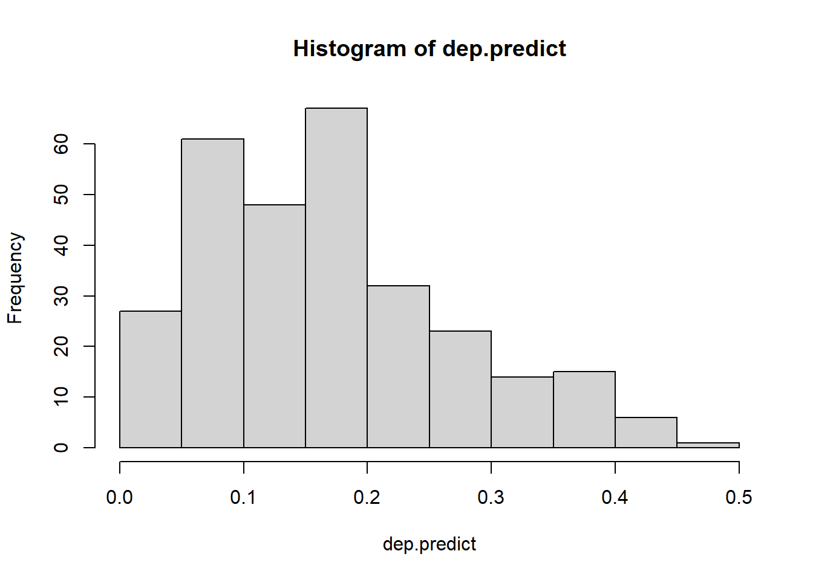
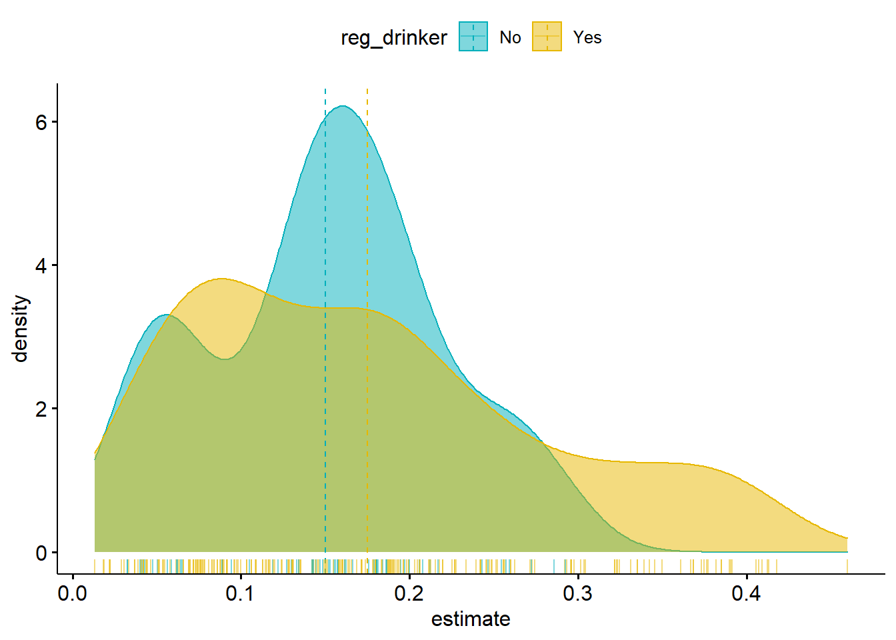
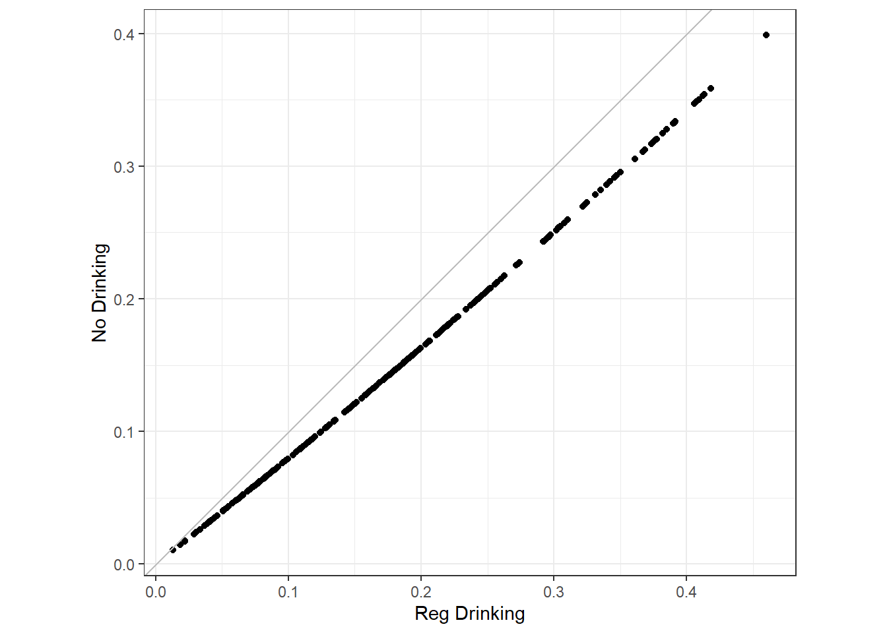

library(marginaleffects); library(gtsummary)
library(tidyverse); library(ggpubr)
depress <- read.delim("C:/GitHub/AppliedStats_notes/data/depress_081217.txt")
names(depress) <- tolower(names(depress))
exa.dep <- depress %>% select(cases, age, income, sex, drink)Marginal Effects
This example uses a cleaned version of the depression data from PAM6, and the marginaleffects package.
Making Predictions
In ASCN 12.1 we looked at making predictions using the following logistic regression model for the likelihood of depression (except I’m adding the drink variable here).
dep_sex_model <- glm(cases ~ age + income + sex + drink, data=exa.dep, family="binomial")
coef(dep_sex_model)(Intercept) age income sex drink
-0.92221015 -0.02010864 -0.03671841 0.94674920 0.25042232 There we mentioned that to calculate the predicted probability of being depressed for a specific covariate profile: e.g. a 44 year old woman making 20.6k annually.
This is also known as an “adjusted prediction”, “model-based”, or “regression-adjusted” prediction and is the fitted value \(\hat{p}_i\) for a given combination of values \(X_i\).
We then saw how we could use the model to make predictions for all observations in the original dataset by using the predict function:
dep.predict <- predict(dep_sex_model, type = "response")
head(dep.predict) 1 2 3 4 5 6
0.18396349 0.08402576 0.16002493 0.21225963 0.15792248 0.17389107 and then visualize the distribution of model predicted probabilities
hist(dep.predict)
The predictions() function from the marginaleffects package can give us this information as well, but more readily provides the standard error with confidence interval for that single prediction, and binds it back onto the dataset used in the model.
dep.pred.meff <- predictions(dep_sex_model)
data.frame(dep.pred.meff) %>% head() rowid estimate p.value conf.low conf.high cases age income sex drink
1 1 0.18396349 5.714805e-04 0.08807908 0.3447663 0 68 4 1 0
2 2 0.08402576 4.766854e-10 0.04145472 0.1628853 0 58 15 0 1
3 3 0.16002493 1.400929e-09 0.10022680 0.2457558 0 45 28 1 1
4 4 0.21225963 5.698388e-04 0.11331640 0.3622961 0 50 9 1 0
5 5 0.15792248 8.025076e-07 0.08798041 0.2671779 0 33 35 1 1
6 6 0.17389107 5.492250e-05 0.08984869 0.3097879 0 24 11 0 1Adjusted predictions at the mean
Sometimes we want to have a single estimate for the “average” prediction. First we look at the adjusted prediction for the ‘average’ person. This does not mean \(\bar{y}\), but the prediction when all predictors are held at their mean.
predictions(dep_sex_model, newdata = "mean")
Estimate Pr(>|z|) 2.5 % 97.5 % age income sex drink
0.143 <0.001 0.104 0.194 44 21 0.622 0.796
Columns: rowid, estimate, p.value, conf.low, conf.high, cases, age, income, sex, drink This output reports a predicted probability of depression of 0.144 (95% CI 0.104 - 0.194), for a 44 year old person making $21k a year. But what is sex=0.622 and drink= 0.79? These were categorical variables.
Because sex and drink were coded as 0/1, R treated them as numeric and thus is reporting a decimal value for the mean. However, this still makes sense because the mean of a boolean value is the proportion - so 62.2% of the individuals in this data were men, and 79.6% drank regularly. Remember, averages don’t have to be values actually observed on the data.
Average adjusted predictions by group
What if my main research question is to better understand the effect of drinking on depression? Odds ratios are hard to understand, and sometimes it’s better to speak (or present results) in terms of predicted probabilities.
First, a plot.
dep.pred.meff$reg_drinker <- factor(dep.pred.meff$drink, labels = c("No", "Yes"))
ggdensity(dep.pred.meff,
x = "estimate",
add = "mean", rug = TRUE,
color = "reg_drinker", fill = "reg_drinker",
palette = c("#00AFBB", "#E7B800"))
Great, so they’re different, but significantly different? Is \(p_{drink} \neq p_{no drink}\)? We can use the by argument in predictions() to calculate the average adjusted prediction for different subsets of the data.
predictions(dep_sex_model, by = "drink")
drink Estimate Pr(>|z|) 2.5 % 97.5 %
0 0.133 <0.001 0.069 0.243
1 0.147 <0.001 0.104 0.204
Columns: drink, estimate, p.value, conf.low, conf.high The predicted probability of depression for those that drink is 0.147 (95% CI 0.104 - 0.204), compared to the predicted probability of depression for someone that doesn’t drink 0.133 (95% CI 0.069, 0.243). Since these two intervals overlap, there’s not enough evidence to believe that they are significantly different. However, sometimes people need p-values to “enhance” conclusions such as that one (next section).
Comparisons
Observational level (conditional)
The comparisons function creates predictions for each observation at different regressor values (e.g. male and female, drinking or no drinking), and then computes some measure of comparison such as a difference, ratio or odds.
(dep.drink.comp <- comparisons(dep_sex_model, variables = "drink"))
Term Contrast Estimate Std. Error z Pr(>|z|) 2.5 % 97.5 %
drink 1 - 0 0.04059 0.06585 0.617 0.538 -0.08846 0.1696
drink 1 - 0 0.01737 0.02759 0.630 0.529 -0.03671 0.0715
drink 1 - 0 0.03087 0.04900 0.630 0.529 -0.06517 0.1269
drink 1 - 0 0.04487 0.07205 0.623 0.533 -0.09635 0.1861
drink 1 - 0 0.03053 0.04828 0.632 0.527 -0.06409 0.1251
--- 284 rows omitted. See ?avg_comparisons and ?print.marginaleffects ---
drink 1 - 0 0.01577 0.02480 0.636 0.525 -0.03284 0.0644
drink 1 - 0 0.01147 0.01806 0.635 0.526 -0.02394 0.0469
drink 1 - 0 0.00401 0.00672 0.597 0.550 -0.00915 0.0172
drink 1 - 0 0.01493 0.02338 0.639 0.523 -0.03090 0.0608
drink 1 - 0 0.04101 0.06599 0.621 0.534 -0.08833 0.1704
Columns: rowid, term, contrast, estimate, std.error, statistic, p.value, conf.low, conf.high, predicted, predicted_hi, predicted_lo, cases, age, income, sex, drink This output shows the observational level differences in predicted probability for each observation, under each value for the variable drink. Notice the contrast between regular drinking and non-drinking is different from row to row. This reflects that the impact of regular drinking has a different effect for different individuals.
We can plot these two predicted probabilities against each other (reference line in grey).
ggplot(dep.drink.comp, aes(predicted_hi, predicted_lo)) +
geom_point() +
geom_abline(slope = 1, intercept = 0, color ="grey") +
coord_fixed() + theme_bw() +
labs(x = "Reg Drinking", y = "No Drinking")
Here we notice that the predicted probability of depression is higher for everyone if they were a regular drinker, and the difference in probabilities (potential impact of drinking on likelihood of depression) increases as the average predicted probability of depression increases.
Average difference (marginal)
By averaging these differences across all observations in our data set we get that regular drinking increases the average predicted probability of depression by 0.032 (-0.067, 0.13), a non-significant difference.
avg_comparisons(dep_sex_model, variables = "drink")
Term Contrast Estimate Std. Error z Pr(>|z|) 2.5 % 97.5 %
drink 1 - 0 0.0315 0.0501 0.629 0.529 -0.0667 0.13
Columns: term, contrast, estimate, std.error, statistic, p.value, conf.low, conf.high More specific comparisons
What if we’re interested in something a bit more specific, such as
Is the impact of regular drinking on depression greater for women than for men?
or
The effect of regular drinking for a 45 year old woman compared to a 45 year old man.
We can specify a datagrid or grid of reference values (aka predictor space) to calculate this comparison on.
comparisons(dep_sex_model,
variables = "drink",
newdata = datagrid(age = 45, sex = 0:1))
Term Contrast Estimate Std. Error z Pr(>|z|) 2.5 % 97.5 % income age
drink 1 - 0 0.0180 0.0282 0.638 0.524 -0.0373 0.0733 21 45
drink 1 - 0 0.0367 0.0584 0.629 0.529 -0.0778 0.1513 21 45
sex
0
1
Columns: rowid, term, contrast, estimate, std.error, statistic, p.value, conf.low, conf.high, predicted, predicted_hi, predicted_lo, cases, income, drink, age, sex - For a 45 year old male, regular drinking is associated with a 0.018 (-0.04, 0.07) increase in predicted probability of depression,
- For a 45 year old female, regular drinking is associated with a 0.03 (-0.08, 0.15) increase in predicted probability of depression,
Averaged across all subgroups and other variables;
avg_comparisons(dep_sex_model,
variables = "drink",
newdata = datagrid(age = 45, sex = 0:1))
Term Contrast Estimate Std. Error z Pr(>|z|) 2.5 % 97.5 %
drink 1 - 0 0.0274 0.0431 0.634 0.526 -0.0572 0.112
Columns: term, contrast, estimate, std.error, statistic, p.value, conf.low, conf.high Counterfactuals and use in Causal analysis
https://vincentarelbundock.github.io/marginaleffects/articles/gformula.html